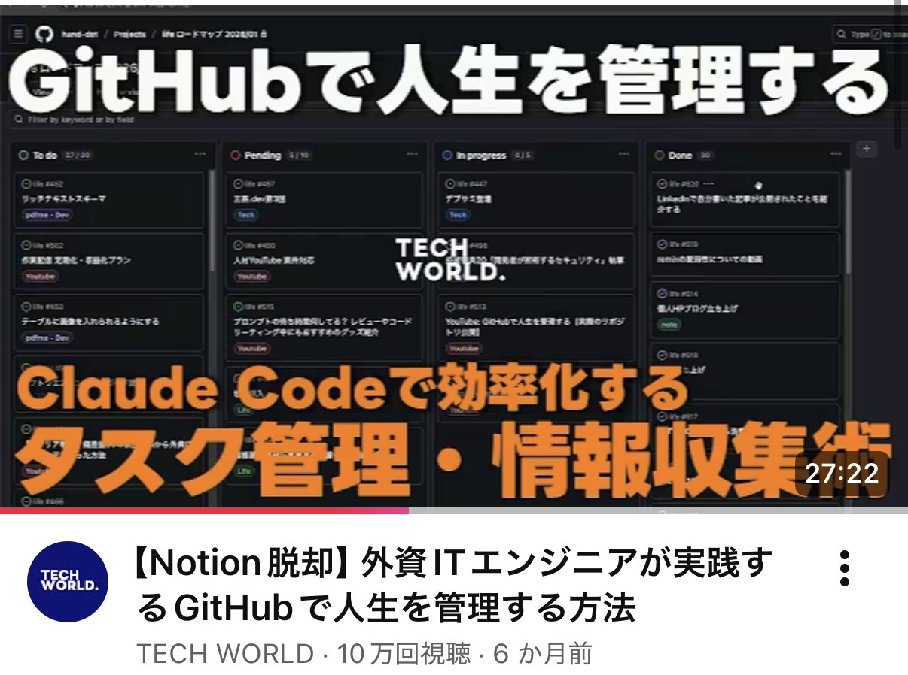

I made my first website

I did not have passion for web-development before, even though I major in computer science. Those engineers are always required to keep learning skills on their own, but I never did by myself.
One day, when I was serching about task-managent, I found a way of GitHub by a software engineer. I found it really cool, and it made me eager to learn software engineering skill.
The development of this website is the very start of my engineer history. Every professional was a beginner before. Now I am one of them.